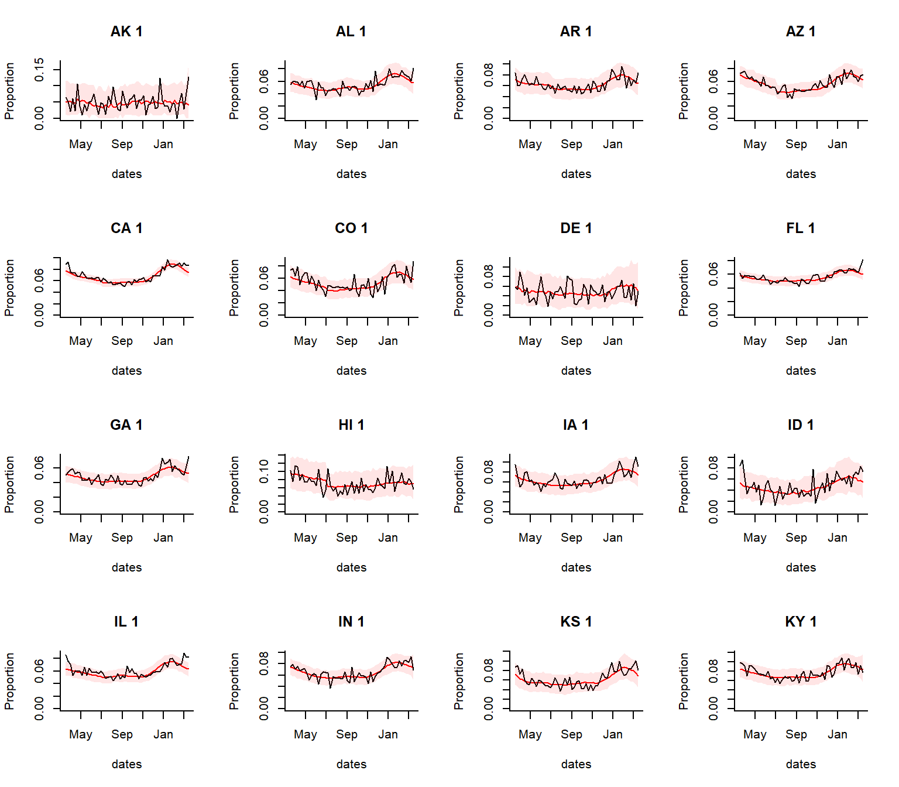
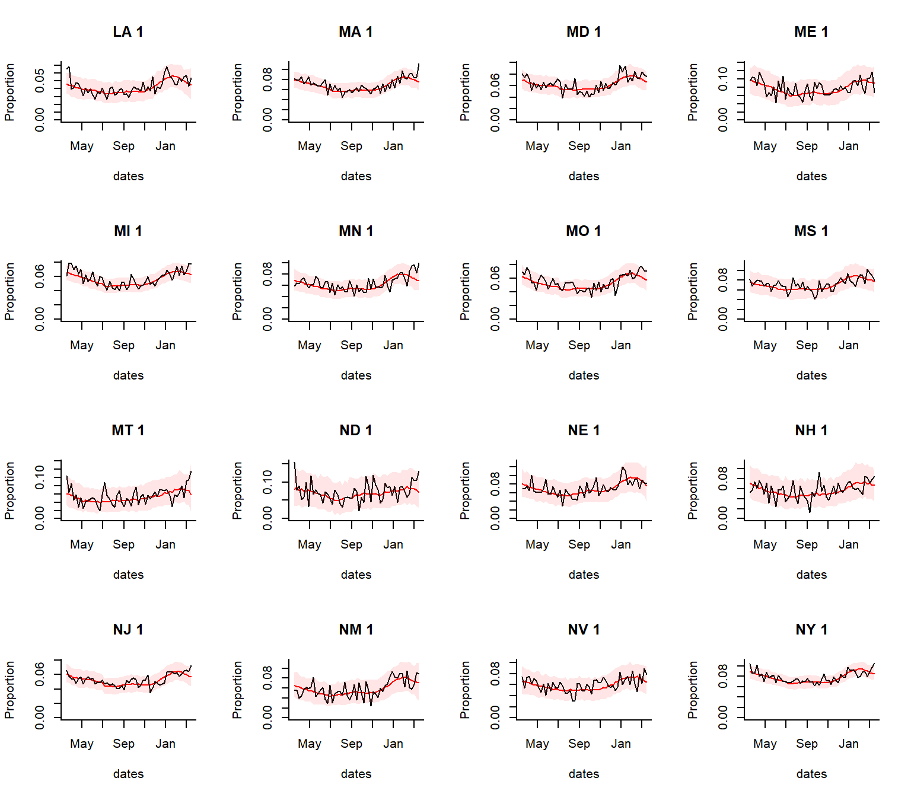
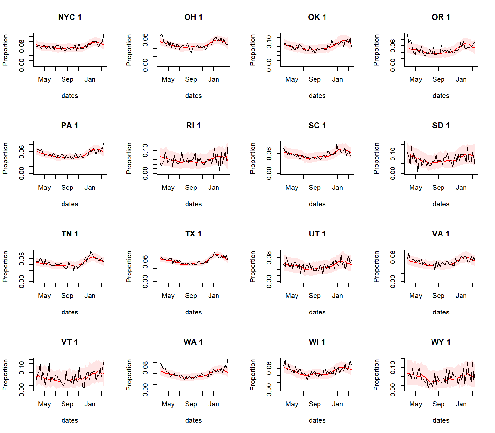
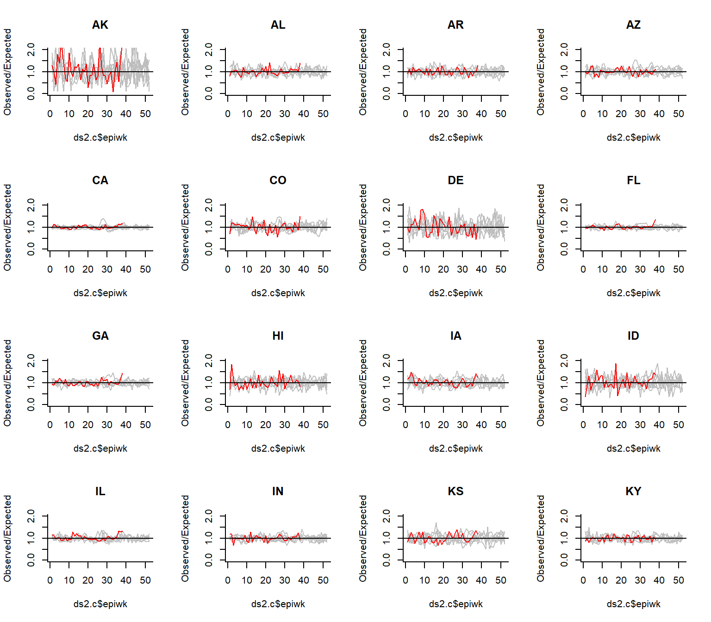
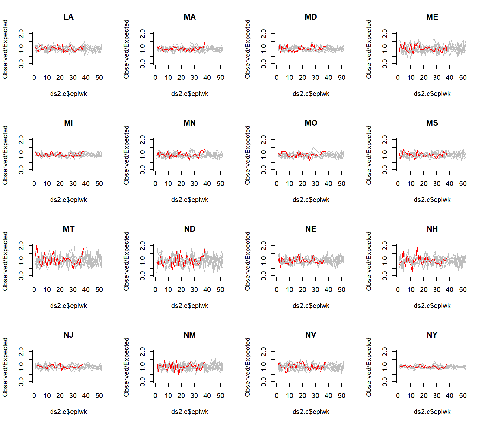
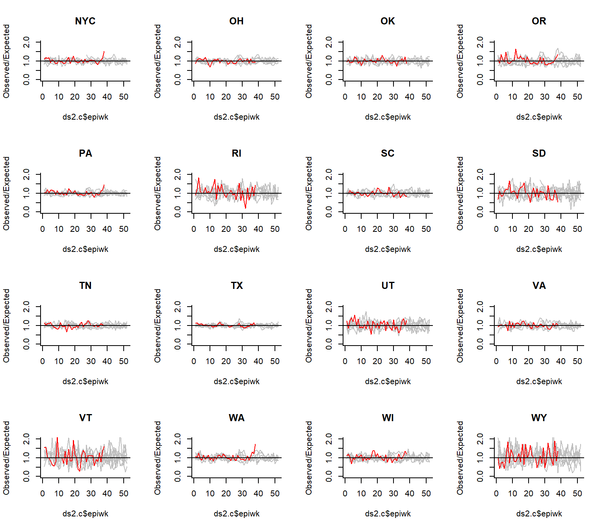

PImortality.Rmdlibrary(ExcessILI) library(cdcfluview) #> Warning: package 'cdcfluview' was built under R version 3.6.3 library(reshape2) library(ggplot2) #> Warning: package 'ggplot2' was built under R version 3.6.3 library(RColorBrewer) library(plotly) #> #> Attaching package: 'plotly' #> The following object is masked from 'package:ggplot2': #> #> last_plot #> The following object is masked from 'package:stats': #> #> filter #> The following object is masked from 'package:graphics': #> #> layout library(MMWRweek) #> Warning: package 'MMWRweek' was built under R version 3.6.3
The goal for this package is to facilitate the formatting of line list data from syndromic surveillance datasets into time series and then the analysis of these data to detect increases above the seasonal baseline. For US data, there is an option to automatically adjust the data for state-specific flu activity (using data from NREVSS and/or state-specific RSV activity (based on Google search volume). The user can either start with line list data or formatted time series data
In this example, we will analyze ILINet data with a simple seasonal baseline, adjusting for flu and year-to-year variations. The model is fit through end-of-February 2020 and then extrapolated forward based on the time of year and the amount of influenza activity. Influenza activity is captured by using the proportion of tests that were positive from the NREVSS system (log transformed in model)
## Download the mortality data pi.data
#Format and fill mssings with 0s pi.data$state
#Run analysis excess_deaths1.adjusted [1] "epiyr.index.f + sin1 + cos1 + sin2 + cos2 + sin3 + cos3" #> [1] "epiyr.index.f + sin1 + cos1 + sin2 + cos2 + sin3 + cos3" #> [1] "epiyr.index.f + sin1 + cos1 + sin2 + cos2 + sin3 + cos3" #> [1] "epiyr.index.f + sin1 + cos1 + sin2 + cos2 + sin3 + cos3" #> [1] "epiyr.index.f + sin1 + cos1 + sin2 + cos2 + sin3 + cos3" #> [1] "epiyr.index.f + sin1 + cos1 + sin2 + cos2 + sin3 + cos3" #> [1] "epiyr.index.f + sin1 + cos1 + sin2 + cos2 + sin3 + cos3" #> [1] "epiyr.index.f + sin1 + cos1 + sin2 + cos2 + sin3 + cos3" #> [1] "epiyr.index.f + sin1 + cos1 + sin2 + cos2 + sin3 + cos3" #> [1] "epiyr.index.f + sin1 + cos1 + sin2 + cos2 + sin3 + cos3" #> [1] "epiyr.index.f + sin1 + cos1 + sin2 + cos2 + sin3 + cos3" #> [1] "epiyr.index.f + sin1 + cos1 + sin2 + cos2 + sin3 + cos3" #> [1] "epiyr.index.f + sin1 + cos1 + sin2 + cos2 + sin3 + cos3" #> [1] "epiyr.index.f + sin1 + cos1 + sin2 + cos2 + sin3 + cos3" #> [1] "epiyr.index.f + sin1 + cos1 + sin2 + cos2 + sin3 + cos3" #> [1] "epiyr.index.f + sin1 + cos1 + sin2 + cos2 + sin3 + cos3" #> [1] "epiyr.index.f + sin1 + cos1 + sin2 + cos2 + sin3 + cos3" #> [1] "epiyr.index.f + sin1 + cos1 + sin2 + cos2 + sin3 + cos3" #> [1] "epiyr.index.f + sin1 + cos1 + sin2 + cos2 + sin3 + cos3" #> [1] "epiyr.index.f + sin1 + cos1 + sin2 + cos2 + sin3 + cos3" #> [1] "epiyr.index.f + sin1 + cos1 + sin2 + cos2 + sin3 + cos3" #> [1] "epiyr.index.f + sin1 + cos1 + sin2 + cos2 + sin3 + cos3" #> [1] "epiyr.index.f + sin1 + cos1 + sin2 + cos2 + sin3 + cos3" #> [1] "epiyr.index.f + sin1 + cos1 + sin2 + cos2 + sin3 + cos3" #> [1] "epiyr.index.f + sin1 + cos1 + sin2 + cos2 + sin3 + cos3" #> [1] "epiyr.index.f + sin1 + cos1 + sin2 + cos2 + sin3 + cos3" #> [1] "epiyr.index.f + sin1 + cos1 + sin2 + cos2 + sin3 + cos3" #> [1] "epiyr.index.f + sin1 + cos1 + sin2 + cos2 + sin3 + cos3" #> [1] "epiyr.index.f + sin1 + cos1 + sin2 + cos2 + sin3 + cos3" #> [1] "epiyr.index.f + sin1 + cos1 + sin2 + cos2 + sin3 + cos3" #> [1] "epiyr.index.f + sin1 + cos1 + sin2 + cos2 + sin3 + cos3" #> [1] "epiyr.index.f + sin1 + cos1 + sin2 + cos2 + sin3 + cos3" #> [1] "epiyr.index.f + sin1 + cos1 + sin2 + cos2 + sin3 + cos3" #> [1] "epiyr.index.f + sin1 + cos1 + sin2 + cos2 + sin3 + cos3" #> [1] "epiyr.index.f + sin1 + cos1 + sin2 + cos2 + sin3 + cos3" #> [1] "epiyr.index.f + sin1 + cos1 + sin2 + cos2 + sin3 + cos3" #> [1] "epiyr.index.f + sin1 + cos1 + sin2 + cos2 + sin3 + cos3" #> [1] "epiyr.index.f + sin1 + cos1 + sin2 + cos2 + sin3 + cos3" #> [1] "epiyr.index.f + sin1 + cos1 + sin2 + cos2 + sin3 + cos3" #> [1] "epiyr.index.f + sin1 + cos1 + sin2 + cos2 + sin3 + cos3" #> [1] "epiyr.index.f + sin1 + cos1 + sin2 + cos2 + sin3 + cos3" #> [1] "epiyr.index.f + sin1 + cos1 + sin2 + cos2 + sin3 + cos3" #> [1] "epiyr.index.f + sin1 + cos1 + sin2 + cos2 + sin3 + cos3" #> [1] "epiyr.index.f + sin1 + cos1 + sin2 + cos2 + sin3 + cos3" #> [1] "epiyr.index.f + sin1 + cos1 + sin2 + cos2 + sin3 + cos3" #> [1] "epiyr.index.f + sin1 + cos1 + sin2 + cos2 + sin3 + cos3" #> [1] "epiyr.index.f + sin1 + cos1 + sin2 + cos2 + sin3 + cos3" #> [1] "epiyr.index.f + sin1 + cos1 + sin2 + cos2 + sin3 + cos3"
### Extract the quantities of interest #Which syndrome do you want to plot, and over what time range? syndrome.select
#Extract the data needed to plot from the results dates1
Generate the plots
n.days
par(mfrow=c(4,4))
for(i in 1:dim(pred)[2]){
for(j in 1:dim(pred)[3]){
y.range1 ## Observed/expected
par(mfrow=c(4,4))
for(i in 1:dim(pred)[2]){
y.range1